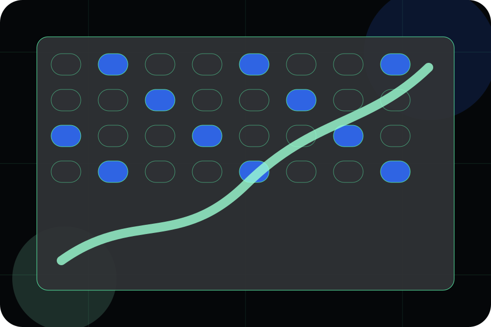

Best Fit
Who should use programs and when it belongs in the pipeline journey.
Pipeline / 01
Pipeline opens as a clear life sciences decision hub: what Helix offers, who it helps, why it matters, and which route to take first.
The first screen combines positioning, proof, primary action, and fast internal navigation, so people can act immediately or compare the rest of the pipeline route with context.
AI biology lab hero
Select the closest route and Helix keeps the next step, proof, and follow-up expectation aligned with evidence and scientific credibility.

Pipeline / 02
Programs explains the practical scope, best-fit situations, and expected outcome so life sciences visitors can compare options without decoding jargon.
The section keeps the offer concrete: what is included, who it is best for, what decision it supports, and which linked route gives the deeper detail.
Explore PipelineWho should use programs and when it belongs in the pipeline journey.
The practical benefit visitors should expect after choosing this route.
Where to compare details, pricing, support, or contact options before committing.
Pipeline / 03
Discovery adds technical context to the pipeline route, using the scientific operating system dossier structure to support evidence and scientific credibility before visitors choose a next step.
Helix uses pipeline evidence cards and focused copy to make the decision easier to scan, aligning the section with evidence and scientific credibility rather than filling space.
Explore PipelineDiscovery gives the page a specific angle instead of repeating the navigation label.
The pipeline evidence cards show what to compare, what to avoid, and what matters most for life sciences, pharmaceuticals & biotechnology visitors.
The final cue points to a useful internal route so the section keeps the journey moving.
Pipeline / 04
Preclinical adds technical context to the pipeline route, using the scientific operating system dossier structure to support evidence and scientific credibility before visitors choose a next step.
Helix uses pipeline evidence cards and focused copy to make the decision easier to scan, aligning the section with evidence and scientific credibility rather than filling space.
Explore PipelinePreclinical gives the page a specific angle instead of repeating the navigation label.
The pipeline evidence cards show what to compare, what to avoid, and what matters most for life sciences, pharmaceuticals & biotechnology visitors.
The final cue points to a useful internal route so the section keeps the journey moving.
Pipeline / 05
Clinical adds technical context to the pipeline route, using the scientific operating system dossier structure to support evidence and scientific credibility before visitors choose a next step.
Helix uses pipeline evidence cards and focused copy to make the decision easier to scan, aligning the section with evidence and scientific credibility rather than filling space.
Explore PipelineClinical gives the page a specific angle instead of repeating the navigation label.
The pipeline evidence cards show what to compare, what to avoid, and what matters most for life sciences, pharmaceuticals & biotechnology visitors.
The final cue points to a useful internal route so the section keeps the journey moving.
Pipeline / 06
Milestones adds technical context to the pipeline route, using the scientific operating system dossier structure to support evidence and scientific credibility before visitors choose a next step.
Helix uses pipeline evidence cards and focused copy to make the decision easier to scan, aligning the section with evidence and scientific credibility rather than filling space.
Explore PipelineMilestones gives the page a specific angle instead of repeating the navigation label.
The pipeline evidence cards show what to compare, what to avoid, and what matters most for life sciences, pharmaceuticals & biotechnology visitors.
The final cue points to a useful internal route so the section keeps the journey moving.
Pipeline / 07
Status adds technical context to the pipeline route, using the scientific operating system dossier structure to support evidence and scientific credibility before visitors choose a next step.
Helix uses pipeline evidence cards and focused copy to make the decision easier to scan, aligning the section with evidence and scientific credibility rather than filling space.
Explore PipelineHelix structures status around context, judgment, and a clear next route so visitors can compare the block quickly before they discuss the research fit.
Discuss ResearchPipeline / 08
Differentiation adds technical context to the pipeline route, using the scientific operating system dossier structure to support evidence and scientific credibility before visitors choose a next step.
Helix uses pipeline evidence cards and focused copy to make the decision easier to scan, aligning the section with evidence and scientific credibility rather than filling space.
Explore Pipeline
Differentiation gives the page a specific angle instead of repeating the navigation label.

The pipeline evidence cards show what to compare, what to avoid, and what matters most for life sciences, pharmaceuticals & biotechnology visitors.

The final cue points to a useful internal route so the section keeps the journey moving.
Pipeline / 09
Updates adds technical context to the pipeline route, using the scientific operating system dossier structure to support evidence and scientific credibility before visitors choose a next step.
Helix uses pipeline evidence cards and focused copy to make the decision easier to scan, aligning the section with evidence and scientific credibility rather than filling space.
Explore PipelineUpdates gives the page a specific angle instead of repeating the navigation label.
Pipeline / 10
Helix closes the pipeline route with a clear action, a quick reminder of the value, and a low-friction way to discuss the research fit.
Visitors who are ready can use the primary action. Visitors who are still comparing can scan the section links, proof, and support routes before they discuss the research fit.
Discuss ResearchThe final block keeps the choice simple: act now, compare one more proof route, or send enough detail for a focused response.
Discuss Researchevidence and scientific credibility
A research platform story built around AI discovery, phase tables, partner proof, and data-scale credibility. Pipeline ends with a direct path to discuss the research fit, plus enough context for visitors who still need to compare.
Information is provided for planning and should be reviewed for the final client, location, and operating rules.